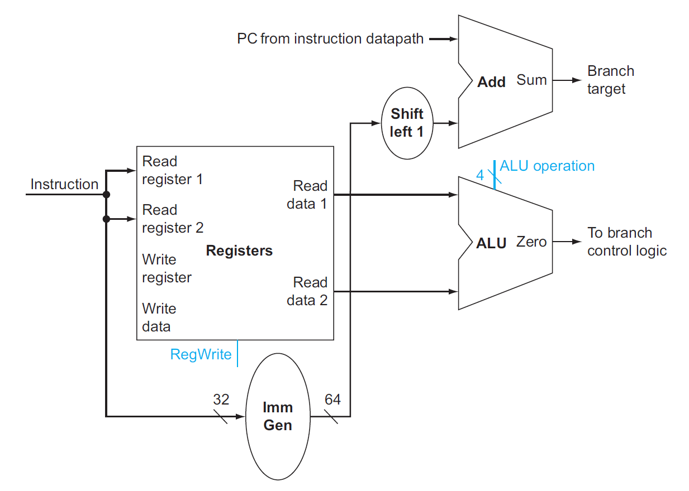
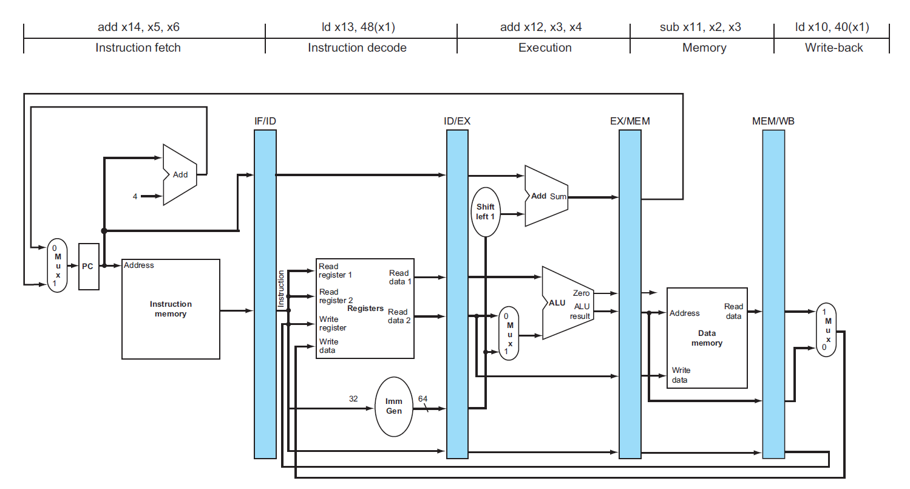
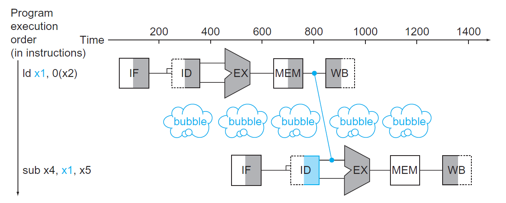
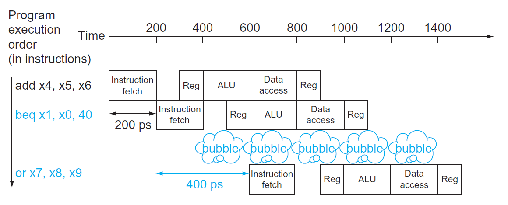

Chap 4: The Processor⚓︎
约 13299 个字 80 行代码 预计阅读时间 67 分钟
核心知识
-
单周期 CPU
- 数据通路
- 控制单元：ALU 控制、主控制
-
流水线 CPU
- 五个阶段：IF、ID、EX、MEM、WB
- 数据通路（四个流水线寄存器
） 、控制器 - 流水线冒险
- 结构冒险
- 数据冒险：前递、停顿
- 控制冒险：静态 / 动态预测
-
异常 & 中断
- 指令集并行：静态 / 动态多发射
Single-Cycle⚓︎
在第 1 章和第 2 章的学习中，我们已经知道：计算机的性能由以下因素衡量：
- 指令数(instruction count)：取决于指令集架构 (ISA) 和编译器（第 2 章已介绍）
- 时钟周期(clock cycle time) 和每条指令周期数 (CPI)：取决于 CPU（第 4 章，也就是接下来要将的内容）
单周期 (single-cycle)CPU在一个时钟周期内仅执行一条指令。CPU 主要由两部分构成——数据通路(datapath) 和控制单元(control unit)，下面按顺序介绍这两者。
Datapath⚓︎
Overview⚓︎
RISC-V 指令集架构下的最最简单的 CPU 应该要实现以下核心指令：
- 内存引用指令(memory-reference instructions)：
ld、sd... - 算术逻辑指令(arithmetic-logical instructions)/R 型指令：
add、sub、and、or... - 条件分支指令(conditional branch instructions)：
beq...
注：实验课上还需要实现更多的指令，包括与立即数相关的 I 型指令，以及无条件分支指令
下面简单介绍一下如何实现这些指令：
- 最开始的两步是相同的：
- 取指 (IF)：将 PC（程序计数器）值（当前指令的地址）传到指令内存中，从而获取当前需要执行的指令
- 译码 (ID)：根据指令的特定字段，读取一到二个寄存器内的数据（除了
ld指令只需读取一个寄存器的数据外，大多数指令需要两个寄存器）
- 后面的步骤则因指令的不同而不同：
- 执行 (EX)：所有指令都会用到 ALU，但是有不同的目的：
- 内存引用指令：地址计算（利用加法）
- 算术逻辑指令：执行算术逻辑运算
- 条件分支指令：判断两数是否相等（利用减法）
- 访存 (MEM)/ 写回 (WB)：ALU 完成任务后，后续操作的区别会更大：
- 内存引用指令：
- 加载指令：读取数据（访存 + 写回）
- 存储指令：写下数据（访存）
- 算术逻辑指令：将 ALU 或内存中的数据写入寄存器中（写回）
- 条件分支指令：根据比较结果，可能会改变下一条指令的地址（PC + 4 / 指定的指令地址
） （写回）
- 内存引用指令：
- 执行 (EX)：所有指令都会用到 ALU，但是有不同的目的：
注：因此绝大多数指令只需四步即可完成，只有加载相关的指令需要五步。
下图是一个极简版本的单周期 CPU 的数据通路原理图：

- 左上角：PC 的来源有两个：PC + 4（靠左的 Add）或者来自指令内存的地址（靠右的 Add）
- 中间：写回寄存器的数据也有两个来源：ALU 的运算结果，或来自内存的值
- 下面的 ALU：第二个输入也有两个来源：寄存器或立即数
显然，一个输入端不可能同时接受两个来源的数据（用红笔标出的地方
- 前面提到的双来源输入都用 MUX 进行选择
- 对于条件分支指令，只有当 ALU（减法）结果为 0（表明两数相等
） ，且控制单元的信号Branch = 1时，PC 的值为指定的跳转地址 - 根据数逻的知识，我们可以将图中出现的元件归个类：
- 组合元件 (combinational elements)：ALU、MUX 等
- 状态（时序）元件 (state elements)：内存、寄存器等
一些约定
- 如不做特殊说明，笔记中所涉及到的时序电路均属于上升沿触发的时序电路
- 一些术语：
- 有效(asserted)：高电平
- 无效(deasserted)：低电平
- 总线 (bus)
- 框图相关：
- 用蓝色绘制控制单元和对应的线路
Elements⚓︎
接下来，我们逐一讲解数据通路的各个组成部分（称为数据通路元件 (datapath elements)）
-
取指：

- 指令内存：用于存储程序的指令，并根据 PC 地址提供对应的指令
- 程序计数器 (program counter, PC)：保存当前正在执行的指令地址，本质上是一个 32 位的寄存器
- 加法器：递增 PC(+4)，使其获得下一条指令的地址
-
R 型指令：

-
寄存器堆(register file)（左图
） ：存储了所有的寄存器，通过指定具体的寄存器编号 (register numbers) 来控制对应寄存器的读写- 寄存器编号为 5 位，因为一共只有 \(2^5 = 32\) 个寄存器
- R 型指令需要两个可读的（源）寄存器和一个可写的（目标）寄存器
- 读取数据时只需输入寄存器编号即可获取数据
- 而写入数据时除了需要输出寄存器的编号外，还要写入的数据和一个控制信号
RegWrite，且只有在RegWrite = 1时才可以进行写操作- 之所以这样做，是为了避免因随意写入数据而破坏了原来存在于寄存器堆的值的危险；而读取寄存器堆不会影响到内部的值，因此读取无需控制信号
-
64 位的 ALU（右图）
- 如果 ALU 结果为 0，输出端
Zero = 1，否则Zero = 0（一般用于条件分支指令，这里标灰色表示 R 型指令用不到） - 有 1 个 4 位的 ALU 运算的控制输入，用于选择不同的 ALU 运算
- 如果 ALU 结果为 0，输出端
-
-
内存访问指令：除了需要 R 型指令用到的两个元件外，还包括以下元件：

- 数据内存单元（左图）
- 内存同时具备读（
ld）和写（sd）的控制输入，分别为MemRead和MemWrite- 内存的读取需要控制信号的原因是：并不是所有指令都会有访存操作，所以那些用不到内存值的指令就没必要读取内存数据，因此需要控制信号来关闭这扇门；而所有指令都要从寄存器堆里读取数据，因此寄存器堆的读取无需控制信号
- 内存同时具备读（
- 立即数生成单元（右图
） ：从 32 位指令中提取出与立即数相关的位，将这些位按正确的顺序拼接起来，同时对其符号扩展至 64 位，以便进入 64 位的 ALU 进行运算
- 数据内存单元（左图）
-
条件分支指令（仅考虑
beq指令）- 用到的元件：
- 寄存器堆：包含两个寄存器，表示被比较的两个数
- 立即数生成器：表示地址偏移量
- 两个 ALU：其中一个仅做加法运算（
Add） ，用于计算跳转目标地址
- 该数据通路元件要做的两件事：计算分支目标地址 + 检验寄存器内容
- 一些细节问题：
- 跳转地址的基 (base) 即为当前的分支指令的地址
- 不要忘记：实际的地址偏移量中最低位恒为 0，因此立即数字段需左移一位！
- 我们仅用 ALU 的
Zero输出来获取比较结果
- 用到的元件：
Composition⚓︎
现在，我们将前面得到的数据通路元件组装起来！

- 这里标出了所有的控制信号（共 7 个，11 位
） ，但是没有画出控制单元，因为现在我们只关心数据通路的结构
各类指令在数据通路中如何执行
虽然 PPT 上画的有点丑，但是画的比较清楚，便于理解。


Control Unit⚓︎
The ALU Control⚓︎
在所有的控制信号中，最重要的是 ALU 的控制信号（即上图的ALU operation
ALU 控制信号一共有 4 位：
- 其中 2 位分别来自指令中的
funct3和funct7字段 - 另外 2 位则来自一个称为
ALUOp的字段，它来自主控制单元 (main control unit)，用于指定具体执行何种指令，不同的值对应不同的类型：00：加载 / 存储指令01：条件分支指令10：R 型指令
下表展示了 ALU 控制信号及对应的操作：
| Instruction opcode | ALUOp | Opearation | Funct7 field | Funct3 field | Desired ALU action | ALU control Input |
|---|---|---|---|---|---|---|
| ld | 00 | load doubleword | XXXXXXX | XXX | add | 0010 |
| sd | 00 | store doubleword | XXXXXXX | XXX | add | 0010 |
| beq | 01 | branch if equal | XXXXXXX | XXX | subtract | 0110 |
| R-type | 10 | and | 0000000 | 111 | AND | 0000 |
| R-type | 10 | or | 0000000 | 110 | OR | 0001 |
| R-type | 10 | add | 0000000 | 000 | add | 0010 |
| R-type | 10 | sub | 0100000 | 000 | subtract | 0110 |
| R-type | 10 | slt | 0000000 | 010 | slt | 0111 |
| R-type | 10 | srl | 0000000 | 101 | srl | 0101 |
| R-type | 10 | xor | 0000000 | 011 | xor | 0011 |
Main Control Unit⚓︎
接下来，我们还要处理剩余的 6 个控制信号。在此之前，建议回顾 Chap 2 介绍的各种指令格式。下面的数据通路图将指令的各个字段标注在相应的位置上：

正因为我们设计的指令格式相当规整（不同的指令也具备相似的格式
下表展示了剩下的 6 个控制信号的作用：
RegWrite、MemRead、MemWrite：它们在低电平的时候均无作用，高电平时会允许寄存器 / 内存的读写ALUSrc：决定 ALU 的第 2 个操作数——低电平时 ALU 获取第 2 个寄存器的值，高电平时 ALU 获取立即数PCSrc：低电平时 PC 将会读取下条指令的地址（PC + 4） ，高电平时 PC 将会读取分支目标地址MemtoReg：低电平时将 ALU 的结果返回给目标寄存器，高电平时将内存中的数据传给目标寄存器
最后，我们将所有的控制信号交给主控制单元管理，一个完整的简易版单周期 CPU 的硬件框图如下所示：

对应的控制信号表（输入I[6:0]为 Opcode 的前 7 位

补充：jal对应的输入和输出
- 输入：1101111
- 输出：
ALUsrc：XMemtoReg：10RegWrite：1MemRead：0MemWrite：0Branch：0ALUOp1：XALUOp2：X- （补充，其他类型指令中该字段值为 0
） Jump：1
逻辑电路图：

Operation of the Datapath⚓︎
图中的灰色部分表示没有用到的连线和元件。

执行指令的步骤：
- IF：从指令内存中获取指令，并递增 PC
- ID：从寄存器堆读取寄存器
x2和x3，同时主控制单元设置好对应的控制信号 - EX：ALU 根据操作码确定运算类型，然后对上步中读取的数据进行计算
- WB：将 ALU 的计算结果写入目标寄存器
x1

执行指令的步骤：
- IF：从指令内存中获取指令，并递增 PC
- ID：从寄存器堆读取寄存器
x2 - EX：ALU 计算寄存器
x2的数据和符号扩展后的 12 位立即数之和，该结果作为数据的内存地址 - MEM：根据地址获取对应的内存数据
- WB：将该数据写入寄存器堆内（
x1）

执行指令的步骤：
- IF：从指令内存中获取指令，并递增 PC
- ID：从寄存器堆读取寄存器
x1和x2 - EX：ALU 将读取的两个数据相减；同时将 PC 的值与左移 1 位之后的立即数相加，得到分支目标地址
- 通过 ALU 的
Zero信号来决定如何更新 PC
Conclusion⚓︎
在设计控制单元时，我们并没有用主控制单元来直接控制所有需要控制的元件，而是采取用 ALU 控制（ALUOp）来控制 ALU，再由主控制单元改变ALUOp的值的方法——这样的设计风格称为多级控制(multiple levels of control)，它的优势在于：
- 减小主控制单元的规模
- 减小控制单元的时延 (latency)：某个控制单元的故障并不会影响其他控制单元的运行
现代的计算机不会用到这种单周期的 CPU，因为该 CPU 规定了每个时钟周期的长度一致，因此 CPU 中的最长通路决定了时钟周期的长度，从而导致 CPU 的低效率。改进方法是用到流水线 (pipelining) 的思想，这种思想现在仍用于 CPU 的设计中，下面马上介绍！
Pipelining⚓︎
Overview⚓︎
流水线(pipeline) 是一种使多条指令能够被重叠执行的技术，类似工厂里的组装线。在正式介绍流水线 CPU 之前，强烈建议先看看下面的类比，对流水线的概念有一个大致的印象。
类比
假设要洗一堆脏衣服，我们将这件事分为四个步骤：用洗衣机洗、用烘干机烘干、折叠衣物、放入衣柜，并且为了方便后续解释，假定这四个步骤所花的时间是一样的。现在有四堆脏衣服要洗，如果一个时间段只完成一个步骤，那么整个过程如下所示（耗时：16

但如果我们采用流水线的思想来洗这四堆衣物，那么整个过程所花的时间就会显著缩短（耗时：7

- 可以看到，在每个阶段 (stage)（即单位时间）内，我们可以并行执行多个任务。流水线虽然没有缩短单步所花的时间（即时延(latency)
） ，但是它增加了每个阶段内能够执行的任务（即增大了吞吐量(throughput)） ，从而缩短完成整个任务的总时间。 - 但并不是每个阶段内执行所有的任务，开头和结尾部分的阶段仅执行部分任务。但如果任务数特别大的话，这并不会影响整体的性能。
注意
流水线 CPU 的时钟周期 = 耗时最长的阶段所花的时间
在 RISC-V 的流水线 CPU 中，单个 RISC-V 指令划分为 5 个阶段（前面已经提到过
- IF（取指）：从内存中获取指令
- ID（译码）：读取寄存器，对指令进行译码
- EX（执行）：执行（算术 / 逻辑）运算或计算地址
- MEM（访存）：从数据内存中访问操作数
- WB（写回）：将结果写回寄存器中
用图形符号表示这五个阶段：
- 图形的左半边阴影表示写入，右半边阴影表示读取，全阴影表示两者皆有
- 之所以如此规定，是因为这里假设在一个时钟周期内，元件的前半个周期可以进行写操作，后半个周期可以进行读操作
本章讨论的流水线 CPU 均为这种五级流水线 CPU，即单个时钟周期内至多能并行执行五个阶段的 CPU。
例子：比较单周期和流水线的性能
假如规定内存访问、ALU 操作所花的时间为 200ps，寄存器读写所花时间为 100ps，且规定单周期 CPU 单个周期内只执行一条指令。各种指令的执行时间如下所示：

现需要执行以下指令：
那么单周期 CPU 和流水线 CPU 执行这段指令所花的时间如下所示：

- 对于单周期 CPU，因为周期的时长取决于执行时间最长的指令所花的时间，因此它的周期为 800ps。执行 3 个
ld指令所花时间为 3 * 800 = 2400ps- 所以，这违背了 "Make the common case fast" 的设计原则
- 对于流水线 CPU，它将
ld指令的执行分为五个阶段，它的周期时长则取决于执行时间最长的阶段所花的时间。因此即使内存读写时间为 100ps，但它也还是要执行 200ps。执行 3 个ld指令所花的时间为 7 * 200 = 1400ps
对于流水线和单周期 CPU 执行指令的总时间，我们有以下公式：
然而这个公式仅在理想条件下（每个阶段花费相同的时间，大量的指令数等）较为准确，否则计算结果与实际情况之间有不小的偏差。
- 比如上面的例子中只执行了 3 条指令，单周期和流水线 CPU 的执行时间之比并不等于阶段数
- 然而当执行 1,000,000 条指令时，执行时间之比就近似等于阶段数。
RISC-V 指令集的设计很好地适配了流水线执行：
- 所有的指令都是等长的（32 位
） ，这便于取指和译码 - 指令格式少而规整，比如在不同指令中，源寄存器和目的寄存器字段位于同一位置上
- 只有加载和存储指令涉及到内存操作数
Graphical Representation⚓︎
在介绍流水线 CPU 的过程中，经常会用到以下两种图示法来表示：
-
多时钟周期流水线图 (multiple-clock-cycle pipeline diagrams)
- 优势：对流水线指令的大致概况，使人一目了然
- 电子元件表示法

- 传统的文字表示法

-
单时钟周期流水线图 (single-clock-cycle pipeline diagrams)
- 优势：展现更多的实现细节，便于理解指令的执行原理

Pipeline Hazards⚓︎
在流水线 CPU 的运行中，可能会遇到无法继续执行下条指令的情况，这称为流水线冒险(pipeline hazards)。有以下几类不同的冒险类型：
- 结构冒险(structural hazard)：因硬件不支持某些指令的组合（比如在同一时段访问同一资源的两条指令）而无法继续执行指令
- 举例：多条加载 / 存储指令在同一个时钟周期对同一内存进行访问
- 解决方法：需要在 IF 阶段停止运行后面的指令，且最好准备多个单独的内存块
- 该问题常出现于浮点数程序中
-
数据冒险(data hazard)：因指令尚未得到所需的数据而不得不停下来 (stall)，直到获取数据后才能继续执行
- 原因：指令之间存在依赖关系（这些依赖关系在指令中出现得十分频繁）
-
解决方案：添加额外的硬件（称为前递(forwarding) 或旁路(bypassing)，下图用蓝色连线表示
） ，从内部资源中检索指令所缺失的数据
- 注意：只有当目标阶段比源阶段发生的更晚，或位于同一时刻时，这种前递才是合法的（即这根蓝色连线从左上到右下，或是一根竖直的线）
- 具体的实现可见下面的小节
-
上面的图给出的是两个 R 型指令的执行，只要加一个前递就能保证指令的连续执行。但是如果先执行加载指令，后执行依赖于该加载指令数据的指令，即使加了一个前递，CPU 还是不得不暂停一个时钟周期，这种情况称为加载使用数据冒险(load-use data hazard)，如下图所示：
- 这种暂停的操作则称为流水线停顿(pipeline stall)（或者叫做冒泡(bubble)
） ，上图中用蓝色的气泡图表示 - 具体的实现可见下面的小节
- 虽然这种停顿能够解决此类数据冒险，但这么一停顿肯定会损失一些时间，所以如果可以的话，应尽量避免停顿。一种做法是：由硬件侦测此类数据冒险是否发生，若发生的话由软件重新为指令序列排序，使其尽可能地减少停顿
例子
将以下 C 语言转化为 RISC-V 汇编语句：
很自然地，我们得到以下汇编代码：
ld x1, 0(x31) ld x2, 8(x31) add x3, x1, x2 sd x3, 24(x31) ld x4, 16(x31) add x5, x1, x4 sd x5, 32(x31)高亮的指令便是数据冒险发生的地方，为了减少停顿，需要调整这些指令的顺序，在这里我们只需要将第 3 个
ld指令提到前面来就行了（想想其中的原因） ：ld x1, 0(x31) ld x1, 0(x31) ld x4, 16(x31) add x3, x1, x2 sd x3, 24(x31) add x5, x1, x4 sd x5, 32(x31)提示

- 这种暂停的操作则称为流水线停顿(pipeline stall)（或者叫做冒泡(bubble)
-
该问题常出现于整数和浮点数程序中
-
控制冒险 / 分支冒险(control hazard/branch hazard)：取到的指令并不是 CPU 所需要的，即指令地址的流向并不在 CPU 的预期内（
好奇怪的表述）- 举例：由于
beq指令在 ID 阶段中还不清楚它包含的跳转地址，因此在下个时钟周期还不能执行下一条指令，需要等beq指令译码完成后再执行 -
有两种可能的解决方案：
-
停顿：让
beq指令与下一条指令之间有一个固定的停顿（多等 1 个时钟周期） 。这样虽然是稳扎稳打的做法，但是效率太低了。 -
分支预测(branch prediction)：预先假设每次执行
beq指令后，都会跳转到下一条连续指令（PC + 4） ，而不是跳转到指定指令（这是一种静态预测(static prediction) 方法）- 如果预测正确，就无需停顿，可以连续地执行指令了（上图）
- 而预测失败的话就要撤回那个错误的下条指令，这需要额外的一个时钟周期，其效果与停顿一样（下图）
- 由于既能解决控制冒险，也保证了速度，因而这种方法实际用于 RISC-V 中

- 还有一种优化的方法——动态预测(dynamic prediction)，比如为每个分支指令分别保存历史记录，当下次执行分支指令时会根据上一次的执行情况选择是否跳转到指定地址，若预测失败则需要撤回该指令，并更新历史记录。这种方法考虑到了不同分支指令的执行情况，从而做出更明智的预测。
-
延迟决策 (delayed decision)：用于 MIPS 指令，这里就不作介绍了
-
-
该问题常出现于整数程序中
- 举例：由于
Pipelined Datapath⚓︎
根据指令执行的五个阶段，用虚线将单周期 CPU 的数据通路划分为五个部分：

不难发现，大多数指令在原理图的执行顺序为从左到右，但也有一些例外：
- 最后的写回阶段中，将内存的数据写入寄存器的线路方向是从右往左的（可能会导致数据冒险）
- PC 寄存器的输入数据（
PC + 4和指定分支地址）是从右往左传递给 PC 左边的 MUX 的（可能会导致控制冒险）
来看下面这个例子：

这里要连续执行三个ld指令。可以看到对于每条指令，指令内存只用了一次（取指阶段

下面将在这个流水线数据通路上演示加载指令和存储指令的执行过程，以便更好地理解整个数据通路的原理
例子
- 将 PC 寄存器内的指令地址传送给流水线寄存器 IF/ID，以供下一条指令使用（比如
beq指令） - 此外还要传递指令内容，因为此时 CPU 还不清楚指令的具体内容，因此需要及时保存

除了继续传递指令地址外，还要将源寄存器的数据和立即数传给 ID/EX，因为它们在之后的阶段中要用到
需要将计算好的内存地址放入流水线寄存器 EX/MEM

从 EX/MEM 读取内存地址，将对应的内存数据写入流水线寄存器 MEM/WB 内

从 MEM/WB 内读取数据，将其写入寄存器堆
前两步和加载指令基本一致，故略过（虽然在指令格式上有细微的差别，但在逻辑原理图中无法体现）

EX/MEM 除了要保存计算出来的地址外，还要保存需要被写入内存的数据
将 EX/MEM 存储的数据写入同样存储在 EX/MEM 的内存地址对应的位置上。此阶段无需使用 MEM/WB 寄存器

存储指令无需写回这一步，因此无事发生。但这是个五级流水线 CPU，每条指令必须经历五个阶段，即五个时钟周期，所以即使啥也不做也要等这一段时钟周期结束才算完成
这个版本的数据通路有一个 bug：在加载指令的最后阶段，我们需要将内存数据写回给哪个寄存器呢？是的，我们忘记保存了目标寄存器的编号。下面给出修正过的数据通路原理图，其中蓝色部分为用于保存目标寄存器编号的部分。

Pipelined Control⚓︎
先将单周期 CPU 的控制信号加入进来，得到以下原理图：

- 由于在每个时钟周期内，PC 寄存器和流水线寄存器都要进行写操作，所以它们不需要用一个单独的写入信号来控制
-
考虑流水线指令的每个阶段所涉及到的控制信号
- IF：无
- ID：无
- EX：
ALUOp、ALUSrc，分别用于控制 ALU 运算类型和决定 ALU 的第二个操作数（rs2orimm） - MEM
： Branch（包括PCSrc） 、MemRead、MemWrite，分别对应beq指令、加载指令和存储指令 - WB：
MemtoReg
-
实际上 , 无论是功能还是取值，这些控制信号和单周期的 CPU 没有什么区别，下面总结了一张流水线 CPU 的控制信号表：
- 同样地，这些控制信号也需要用流水线寄存器来保存和传递，确保当前执行的指令接收正确的控制信号

最后，我们给出更加完整的流水线 CPU 的原理图，包括了完整的数据通路和控制器（但没有考虑任何的流水线冒险问题，这个问题下面马上就会解决的）

Data Hazards⚓︎
在前面我们大致介绍过数据冒险的问题及其解决方案：前递(forward) 和停顿(stall)，本节将会从逻辑设计的角度上来介绍如何具体实现这些方法。
Forwarding⚓︎
给定以下指令段：
可以看到，后面四条指令的输入均依赖于第一条指令的输出结果x2，所以很容易产生了数据冒险的问题，下面的多周期流水线图可以更清楚地显示这个问题：

可以看到，左边两根蓝线的方向是不对的，我们不可能将未来得到的数据传给过去要用到该数据的指令，所以and和or指令得到的是错误的x2（其值为 10add和sd指令得到的x2是正确的（其值为 -20
为了解决这个问题，首先要做的是依赖侦测(dependency detection)：确定何时发生数据冒险问题。下面用符号化的语言归纳了两大类数据冒险的情况：
- EX/MEM.RegisterRd = ID/EX.RegisterRs1(or ID/EX.RegisterRs2)
- MEM/WB.RegisterRd = ID/EX.RegisterRs1(or ID/EX.RegisterRs2)
其中等号的左右两边对应的是不同的指令，且等号右边对应的指令依赖于左边对应指令的结果。如果满足上述情况，等号左半边的寄存器的数据应当前递给等号右半边的寄存器。
对于上例，sub和add指令间的数据冒险属于第一类（EX/MEM.RegisterRd = ID/EX.RegisterRs1sub和or指令间的数据冒险属于第二类（MEM/WB.RegisterRd = ID/EX.RegisterRs2
上面的判断方法还存在一些小瑕疵：
- 首先，并不是所有的指令都包含写入寄存器的操作，所以需要提前检测
RegWrite信号是否为 1，若是则继续进一步的判断；否则就直接 pass 掉，不用担心数据冒险的问题 - 其次，如果某个指令目标寄存器是
x0的话，那么我们不希望将可能的非 0 结果（比如addi x0, x1, 2）前递给别的指令，避免带来不必要的麻烦，所以在依赖侦测前还得进行这一步的判断
综上，我们进一步修正依赖侦测的判断条件，并且将数据冒险细分为执行阶段 (EX) 冒险和访存阶段 (MEM) 冒险两类，得到以下语句：
// EX hazard
if (EX/MEM.RegWrite and (EX/MEM.RegisterRd != 0)
and (EX/MEM.RegisterRd = ID/EX.RegisterRs1))
ForwardA = 10
if (EX/MEM.RegWrite and (EX/MEM.RegisterRd != 0)
and (EX/MEM.RegisterRd = ID/EX.RegisterRs2))
ForwardB = 10
// MEM hazard
if (MEM/WB.RegWrite and (MEM/WB.RegisterRd != 0)
and not(EX/MEM.RegWrite and (EX/MEM.RegisterRd != 0)
and (EX/MEM.RegisterRd = ID/EX.RegisterRs1))
and (MEM/WB.RegisterRd = ID/EX.RegisterRs1))
ForwardA = 01
if (MEM/WB.RegWrite and (MEM/WB.RegisterRd != 0)
and not(EX/MEM.RegWrite and (EX/MEM.RegisterRd != 0)
and (EX/MEM.RegisterRd = ID/EX.RegisterRs2))
and (MEM/WB.RegisterRd = ID/EX.RegisterRs2))
ForwardB = 01
- 高亮部分的语句理解起来可能不是那么直观：这是为了避免 MEM/WB.RegisterRd, EX/MEM.RegisterRd 和 ID/EX.RegisterRs1(2) 三者一起发生冲突，造成新的数据冒险问题
- 这里设置了两个前递信号：
ForwardA和ForwardB，它们实质上是 MUX 的控制信号，而这两个 MUX 分别用来决定参加 ALU 运算的两个操作数。下表展示的是不同 MUX 控制信号对应的功能：
- 默认
ForwardA = 00,ForwardB = 00
理论部分分析完毕，接下来我们将前递的功能添加到逻辑原理图中。下面这张图只展示了与前递相关的阶段（最后三个阶段）的元件
而这张图展示了加入前递单元后的整个流水线 CPU：

Stalling⚓︎
虽然前递能够解决大多数情况下的数据冒险问题，但还是无法克服与加载指令相关的数据冒险问题。前面提到过此类问题的解决方法是停顿(stall) 一个时钟周期，那么何时需要停顿呢？所以需要在原来的 CPU 中再加入一个冒险侦测单元(hazard detection unit)，用于发现合适的停顿时机。与上面的分析类似，这里我们也给出它的判断条件：
if (ID/EX.MemRead and // MemRead represents load instruction
((ID/EX.RegisterRd = IF/ID.RegisterRs1) or (ID/EX.RegisterRd = IF/ID.RegisterRs2)))
stall the pipeline // the load instruction is stalled in the ID stage
具体来说要想停止流水线的运行，需要做到（这也是冒险侦测单元的三个输出
- 停止 IF：不能改变 PC 寄存器的值（读取重复的指令
） ，所以要为 PC 寄存器添加写信号 PCWrite - 停止 ID：不能改变 IF/ID 流水线寄存器的值（读取重复的值）所以要为该寄存器添加写信号 IF/IDWrite
- 停顿的那段时间，虽然 CPU 仍然在运行，但实际上没有改变任何状态，这种情况称为空操作(nops)。为了保证所有元件状态不变，还需要确保所有的控制信号均为 0（事实上，只有 RegWrite 和 MemWrite 一定要设为 0，其他的控制信号是 don't care 的）
下面展示添加了冒险侦测单元后的流水线 CPU 原理图：

这样的流水线 CPU 就可以解决由加载指令带来的数据冒险问题了 ~
例子
对于以下指令段：
如果只用前递来解决数据冒险的话，效果是这样的：

可以看到，ld和and指令间存在数据冒险问题。如果加入了冒险侦测单元的话，就能在执行加载指令时及时停顿整个流水线，从而避免了加载指令带来的数据冒险问题，最终效果如下所示：

Control Hazards⚓︎
注：相比数据冒险，控制 / 分支冒险发生的频率更少。
虽然在前面“Pipeline Hazards”一节提到过beq指令要在 ID 阶段才能决定跳转地址，但实际上这种条件分支指令一直要到 MEM 阶段才能决定跳转地址，因为在 EX 阶段结束后（即 MEM 阶段开始时
- 可以看到，
beq指令在 MEM 阶段完成寄存器的比较，且结果表明需要进行跳转，但此时已经多执行了 3 条指令，因此需要将这 3 条指令从 CPU 中全部清除 - 因此，实际上是经过一系列的调整改进后，
beq才会在 ID 阶段知道要跳转的地方，之后会介绍如何实现这一改进
Static Branch Prediction⚓︎
前面提到过静态分支预测 (static branch prediction) 的大致原理。如果不发生跳转的概率为 50%，且抛弃指令的成本较低，则这种优化方法能减少解决控制冒险的一半成本。
抛弃指令的具体做法为：除了将控制信号置 0 外，还要清除(flush) 前 3 个阶段的指令（此时分支指令进行到 MEM 阶段
- 提前计算分支跳转地址(easy)
- 实际上，PC 值和立即数字段已经存储在 IF/ID 寄存器内，所以只需要将分支地址的计算移到 ID 阶段即可，即在 ID 阶段添一个专门的分支加法器
- 虽然这个加法器可能会在任何指令执行到 ID 阶段时会进行加法运算，但是只有在条件分支指令时会用到它的计算结果
- 提前进行分支跳转决策（这里假设需要跳转分支）(harder)
- 要提前进行寄存器值的比较，需要额外的前递和冒险检测装置
- 在 ID 阶段新增一个相等检验单元 (equality test unit)，用于比较两个寄存器的值，其判断结果会存在 ID/EX 寄存器中
- 在下一个周期上，冒险侦测单元会获取 ID/EX 的值（实现前递
） ，发现有一个beq指令，且需要跳转分支，因此会先清除当前时钟周期内 IF 阶段的指令，并取得跳转后的指令- 通过 IF.Flush 控制信号实现清除
- 此时的 ID 阶段执行空操作 (nop)
- 如果条件分支指令前有一条 ALU 指令，则条件分支指令需要停顿一个周期；如果前面是一条加载指令，则需要停顿两个周期
例子
对于以下指令：
36 sub x10, x4, x8
40 beq x1, x3, 16 // PC-relative branch to 40 + 16 * 2 = 72
44 and x12, x2, x5
48 or x13, x2, x6
52 add x14, x4, x2
56 sub x15, x6, x7
...
72 ld x4, 50(x7)
下面给出在第 3 和第 4 个时钟周期内逻辑原理图，重点关注与beq指令相关的操作：


Dynamic Branch Prediction⚓︎
虽然上述的静态分支预测足以应付五级流水线的控制冒险问题，但是对于更高级数，或更高要求的处理器，这种预测的失败成本还是太大，于是引入了动态分支预测(dynamic branch prediction)——在程序执行过程中，根据上一条条件分支指令的运行结果来预测分支是否跳转。
具体实现中，需要借助分支预测缓存(branch prediction buffer)（或分支历史表(branch history table)
- 对于最简单的 1 位缓存，可以仅用 0 和 1 区别上次的分支指令是否发生跳转。如果预测失败，则需要翻转这个比特。然而缺陷是即使几乎所有的分支指令都发生跳转（比如循环语句：循环前未执行过跳转指令，循环的最后没发生跳转
） ，这种方法还是会有两次错误预测（一次在开头，一次在结尾） - 2 位缓存能够提高预测精度，虽然它需要 2 次预测错误才会改变预测值，但是对于执行一连串跳转情况一致的指令时这种方法的优势更大，下面给出对应的有限状态机图：

- 其他更强大的预测器：
- 相关预测器 (correlating predictor)：结合特定分支指令的局部预测和近几条分支指令的全局预测来进行预测
- 锦标赛预测器 (tournament branch predictor)：对于每个分支指令进行多种预测，用一个选择器来决定用哪种预测
在解决控制冒险问题后，我们得到最终版本的五级流水线处理器的原理图：

Exceptions⚓︎
控制是处理器设计中最难处理的部分，其中一项控制要完成的任务是实现异常(exception) 和中断(interrupt)。这两个词往往会被混为一谈，均指除分支指令外改变指令流的意外事件；但在教材中这两者是有所区分的，下表展示它们的区别和各自对应的事件：
下面仅考虑未定义指令(undefined instruction) 和硬件故障(hardware malfunction) 这两种事件，其余事件的处理放在第 5 章讲解。这里给出了解决异常的两种方法：
-
保存发生异常的指令地址，并将控制权交给操作系统
- 第一步用到了两个寄存器：
- SEPC(supervisor exception program counter, 超级用户异常程序计数器 )：一个用于保存受影响的指令地址的 64 位寄存器
- SCAUSE(supervisor exception cause register, 超级用户异常原因寄存器 )：记录异常原因的 64 位寄存器（尽管大多数位没有用到
） ，这里假设用 2 位记录未定义指令事件，用 12 位表示硬件故障事件
- 第二步的实现：跳转到操作系统的处理程序 (handler) 上，假设地址为 \(\mathtt{0000\ 0000\ 1C09\ 0000}_{\text{hex}}\)
- 第一步用到了两个寄存器：
-
向量中断(vectored interrupt)：根据异常的原因来决定传输控制地址的一种中断
- 异常向量地址会被加到向量表基寄存器上：

处理程序可以执行以下行为：
- 如果可以重启的话，则采取纠错措施，并使用 SEPC 保存的地址返回到原程序
- 否则的话采取中止程序，通过 SEPC、SCAUSE 来报告错误等措施
在流水线处理器中，可以将异常看作另一种控制冒险的类型。假设执行指令add x1, x2, x1时，在 EX 阶段发生了硬件故障，具体的处理措施如下：
- 阻止
x1被异常破坏 - 确保前面的指令仍然能够正常执行
- 清除 (flush) 这条
add指令以及后面的指令，需要在 ID 和 EX 阶段加入清除信号（IF 的清除信号已经加好了） - 将这条异常的指令地址保存在 SEPC 上，并用 SCAUSE 记录异常原因
- 将控制权交给处理程序，具体来说，将地址 \(\mathtt{0000\ 0000\ 1C09\ 0000}_{\text{hex}}\) 赋给 PC，让处理器跳转到这个地址上
这里给出了添加异常处理后的流水线处理器的原理图：

例子
给定以下指令段：
40 sub x11, x2, x4
44 and x12, x2, x5
48 or x13, x2, x6
4C add x1, x2, x1
50 sub x15, x6, x7
54 ld x16, 100(x7)
假设异常发生后会执行以下指令：
下面两张图展示了执行add指令时发生硬件故障时，处理器应对异常的措施：


- 在第 6 个时钟周期中，假设异常在
add指令的 EX 阶段中被检测出来，此时地址 \(\mathtt{0000\ 0000\ 1C09\ 0000}_{\text{hex}}\) 被放入 PC 寄存器中 - 在第 7 个时钟周期中，
add指令和之后的指令被清除（但add指令地址被保存） ，且与异常处理相关的第一条指令进入 IF 阶段
在单个时钟周期中，因为流水线可以执行多条指令，因此有可能发生多重异常(multiple exception)。解决方法是：给这些异常排个优先级，决定先解决哪个异常。在 RISC-V 中，由硬件为异常排序，最早执行的指令先被处理。
上面给出的是一种“精确”的异常处理，而“不精确”的异常处理方法是：
- 停止流水线的运行，并保存当前状态（包括异常原因）
- 让处理程序识别发生异常的指令，以及需要完成或清除的指令（可能需要手工完成）
这种做法简化了硬件，而使软件（处理程序）更加复杂了。对于复杂的多发射无序流水线而言，这种异常处理就不太靠谱了。
Instruction-level Parallelism⚓︎
流水线利用指令的并行处理来提升处理器的执行速度，这种并行方式被称为指令级并行(instruction-level parallelism)。除了用流水线来实现指令级并行，本节将会介绍另一种方法——多发射(multiple issue)，即通过复制多个处理器元件，实现在一个时钟周期内发射多条指令。
- 多发射使得处理器的 CPI 小于 1，为了便于衡量多发射处理器的性能，我们引入 CPI 的倒数IPC(instructions per clock cycle) 作为衡量指标
- 多发射的局限：指令间的依赖问题，哪些指令可以并行处理
- 发射槽(issue slot)：指令发射时所处的位置
- 分类：
- 静态多发射(static multiple issue)：在执行前由编译器（软件）决定如何实现多发射，如何侦测和避免各类冒险问题等
- 动态多发射(dynamic multiple issue)：在执行过程处理器（硬件）决定如何实现多发射，通过一些高级工艺来处理各类冒险问题，而编译器负责将指令重新排序
猜测(speculation)：编译器或处理器“猜测 (guess)”指令的结果，以消除该指令和其他指令的依赖关系。
举例：
- 猜测分支指令的结果，使得分支指令后面的指令得以提前执行
- 猜测加载指令前面的存储指令的访存地址与加载指令的不同，则可以让加载指令先于存储指令执行
猜测的具体实现：
- 编译器：
- 通过猜测为指令重新排序，实现上述例子中的指令移动
- 插入额外的指令，用于检查猜测的精确性，并且提供了一个处理错误猜测的修复例程
- 处理器：
- 在运行时通过某些工艺实现指令的重排
- 用缓存存储猜测结果
- 如果猜测成功，则允许缓存的内容写入寄存器或内存，从而完成指令的执行
- 如果猜测失败，则清楚缓存内容，并且重新执行正确的指令序列
猜测带来的问题：某些指令的猜测可能会引入以前没有的异常。解决方法为：
- 编译器：添加一种特殊的猜测支持，它允许忽视这样的异常，直到能肯定这些异常确实会发生为止
- 处理器：将异常放入缓存中，直到能够肯定导致这种异常出现的指令不再可猜测且即将完成，此时真正的异常将会出现，由处理程序应对这个异常
Static Multiple-Issue Processors⚓︎
在静态多发射处理器中，由编译器全权负责指令的打包和冒险的处理。我们可以将同时发射的这些指令看作一个包含多种操作的大型指令，这称为发射包(issue packet)，或者称为超长指令字(very long instruction word, VLIW)。
编译器必须移除部分或全部的冒险问题，具体做法为：
- 将指令重新排序后再打包
- 尽可能地消除发射包内的依赖关系，虽然有些包内还是存在依赖关系
- 如有必要，用
nop填充指令
我们先来构造一个简单的双发射 RISC-V 处理器：
- 规定其中一条指令属于 ALU 或分支指令，另一条指令属于加载或存储指令
- 为了简化译码和指令发射，假定指令必须两两成对，并且对齐 64 位；如果存在没用到的指令，则用
nop替代这条指令，以保证指令总是成对处理的 - 用到额外的寄存器堆端口，并新增一个 ALU
下图展示了这种静态双发射处理器的运行流程：

而相应的数据通路如下所示：

双发射处理器的问题：如果发射包内的其中一条指令是加载指令，由于加载指令存在使用时延(use latency)，所以如果有指令用到加载得到的数据，则需要停顿一个时钟周期，这样的话会拖累与加载指令配对的另一条指令，因为本来无需等待的这条指令现在被迫停下来。
例子
用静态双发射处理器执行下面的循环：
Loop:
ld x31, 0(x20) // x31 = array of element
add x31, x31, x21 // add scalar in x21
sd x31, 0(x20) // store result
addi x20, x20, -8 // decrement pointer
blt x22, x20, Loop // compare to loop limit
// branch if x20 > x22
为了减少停顿的出现，还需对这些指令重新排序：
- 前 3 条指令均出现
x31，后 2 条指令均出现x20，因此存在两组依赖关系，所以在排序时应尽可能地避免 - 下表展示了重新安排后的指令执行顺序：

- 此时的 CPI = 4 / 5 = 0.8，低于理论上的 0.5，所以效率不是很高
一种提高执行循环的效率编译器的技术是循环展开(loop unrolling)：复制多份不同迭代下的循环体指令。
对上个例子的改进
对于前面给出的循环代码，我们可以先复制 4 份循环体的指令，然后重新安排这些指令，并去除没用的指令，这样下来我们保留了 4 份ld、add和sd指令，而仅保留 1 份的addi和blt指令。下图展示了新的指令执行安排：

-
在展开过程中，我们还用到了别的寄存器（
x28、x29、 x30） ，这种做法叫作寄存器重命名(register renaming)，用于消除反依赖(antidependence)，同时保留了真正的依赖关系 -
反依赖，又称名义依赖 (name dependence)，指的是由于名称复用而导致的排序（比如 4 个循环中都用到了
x31） ，并不是真正意义上的依赖关系（即多个x31只是“障眼法”，只要用别的寄存器代替它，就能消除这种表面上的依赖关系了） -
寄存器重命名后，还是需要对指令的顺序进行适当的调整，以达到更好的执行效果
- CPI = 14 / 8 = 1.75，所以循环展开提升了 1 倍多的性能
- 循环展开的成本更高了，因为要用额外的寄存器实现寄存器重命名，以及代码量的增加
Dynamic Multiple-Issue Processors⚓︎
动态多发射处理器又称超标量(superscalar) 处理器，
- 由处理器来决定一个时钟周期内发生多少条指令，这样可以避免结构和数据冒险问题
- 虽然编译器仍然会参与动态多发射的过程，但不同于静态多发射处理器的地方在于：由处理器保证代码的正确执行，无论代码是否被刻意安排过
- 编译的代码总是能够正确运行，与发射速率和流水线结构无关
很多动态多发射处理器都会用到动态流水线调度(dynamic pipeline scheduling)：由处理器选择要执行的指令，以尝试避免冒险和停顿的出现。因为这样会导致指令的执行顺序和获取顺序不同，因而称这种执行方式为无序执行(out-of-order execution)。
例子
这里的sub指令可以随时执行；而add和ld指令之间存在依赖关系，add指令需要获取ld指令的数据，从而产生停顿。这时可以让sub提前执行，充分利用了停顿的时间。
下图展示了动态调度流水线的结构图：

这种流水线也能够实现寄存器重命名的效果，具体流程为（直接翻译教材
- 当一条指令发射时，该指令会被复制到某个功能单元(functional unit) 的保留区(reservation station)（一块保留操作数或操作的缓存）中。在寄存器堆或重排缓存(reorder buffer)（一块保留动态调度处理器结果的缓存，直到能够安全地将结果存储到寄存器或内存为止）内的任何空闲操作数也都会被复制到保留区中。指令将会一直存在保留区中，直到所有的操作数和功能单元处于空闲状态。对于正在发射的指令，操作数的寄存器拷贝不再需要，其值可被覆写。
- 如果操作数不在寄存器堆或重排缓存中，那一定是在等待功能单元生成这个操作数，该功能单元的名字将会被追踪。当该单元生成结果后，该结果的拷贝会绕过寄存器，被直接放入保留区中。
虽然前面说动态调度是一种无序执行，但是为了让程序看起来像是按顺序执行指令的，因此需要保证 IF 和 ID 阶段按顺序执行，并记录顺序，以便让提交单元(commit unit)（决定是否能够安全释放运算的结果给寄存器或内存的装置）将结果按顺序写给寄存器或内存。这种提交方式称为有序提交(in-order commit)。
所以在动态调度流水线中，流水线的首尾两端是有序执行指令的，但中间部分是可以按照任意顺序执行指令的。
关于猜测：
- 分支指令：预测分支结果，继续发射后面的指令，但是要等到分支结果出来后才能将后面的指令继续提交
- 加载指令：预测加载地址，允许加载指令和存储指令的顺序变换，使用提交单元避免错误预测
为何使用动态调度？
那么就要说说静态多发射的弊端了：
- 不是所有的停顿都是可以预测的
- 如果处理器使用动态分支预测来猜测分支结果，处理器就无法在编译时知道指令的精确顺序，因为它依赖于预测的和实际的分支行为
- 由于流水线的时延和发射宽度根据具体实现的不同而有所变化，因此编译代码序列的最佳方式也会随之改变
多发射总是有效的吗？
不一定，发射速率不是越快越好，因为很少有应用能够保持一个时钟周期内发射多于两个指令，原因有：
-
在流水线内，最主要的性能瓶颈来自无法消除的依赖关系，因而降低了指令间的并行和发射速率
- 比如使用指针创造别名，这会带来更多的依赖关系；但如果用数组的话就没有这种依赖关系
- 又比如我们很难在编译时或运行时精确预测分支结果，这也带来了限制
-
内存层级的缺失也会限制流水线运行的能力，比如内存的实验和有限带宽等
Energy Efficiency and Advanced Pipelining⚓︎
指令集并行的缺陷在于能效问题，因为要提升性能，就需要用到更多的晶体管，但这样通常会降低能效，与我们在第 1 章中提到的“能耗墙”发生冲突。下表展示了不同处理器的流水线复杂度、核的数量以及能耗的对比表格：

启示：多个更简单的核可能给处理器带来更高的能效。
Fallacies and Pitfalls⚓︎
谬误
-
流水线很简单（简单 nm）- 大致思路很简单（洗衣服的那个类比
） ，但细节上的理解就困难了（比如处理各类冒险问题等）
- 大致思路很简单（洗衣服的那个类比
-
流水线思想的实现与工艺无关
- 实际上，更多的晶体管将会带来更高级的工艺
- 流水线相关的 ISA 设计需要考虑工艺的发展趋势
陷阱
不良的 ISA 设计将会对流水线运行产生不利影响
- 复杂的指令集、复杂的寻址模式、延迟分支都会影响流水线的运行效率
评论区